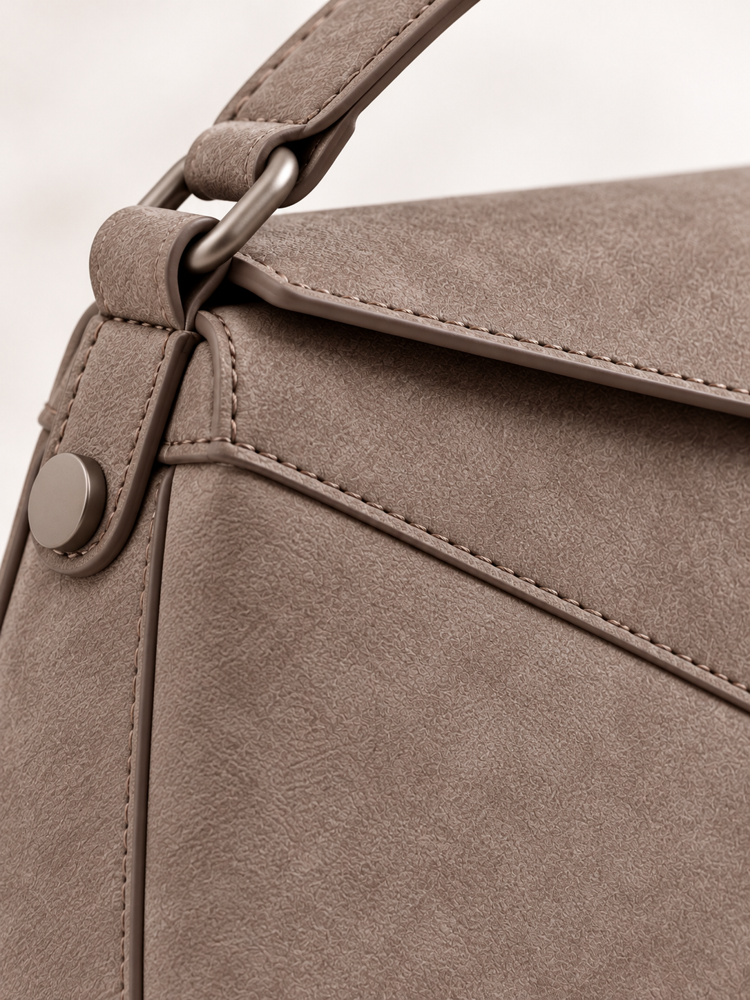

Женские и мужские сумки
Кожа Reskin
Инновационная
Натуральные кожаные волокна и экологичные полиэфирные нити. Внешне неотличима от натуральной кожи, но более устойчива к износу, выдерживает морозы до −35°C, не красится и не боится дождя. Мелкие следы от использования исчезают после несложного ухода.